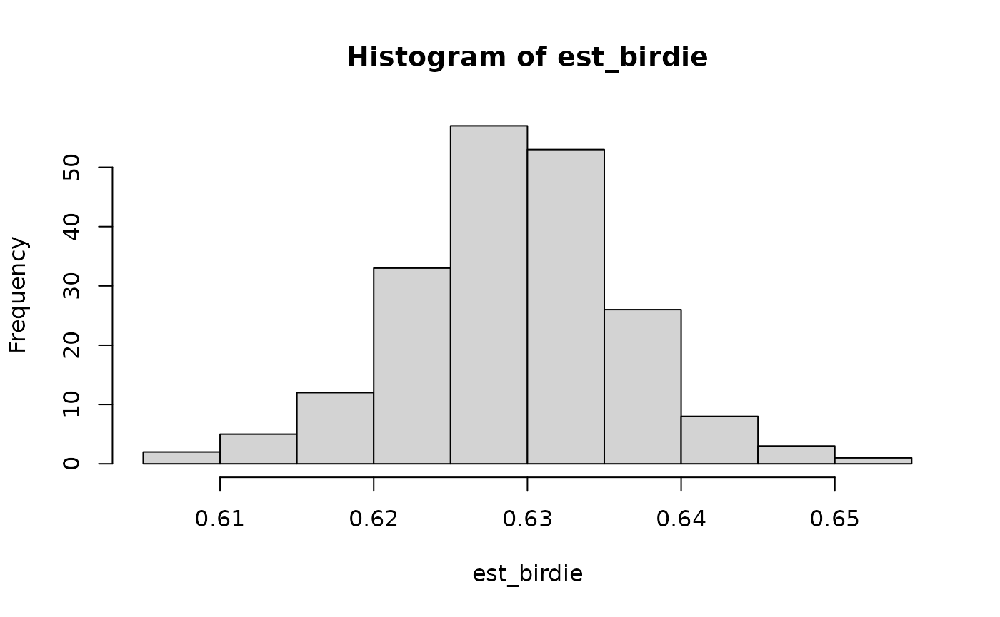

This document will walk you through how to use birdie.
First, load in the package.
For a concrete example, we’ll use some fake voter file data. Our goal is to estimate turnout rates by race.
data(pseudo_vf)
print(pseudo_vf)
#> # A tibble: 5,000 × 4
#> last_name zip race turnout
#> <fct> <fct> <fct> <fct>
#> 1 BEAVER 28748 white yes
#> 2 WILLIAMS 28144 black no
#> 3 ROSEN 28270 white yes
#> 4 SMITH 28677 black yes
#> 5 FAY 28748 white no
#> 6 CHURCH 28215 white yes
#> 7 JOHNSON 28212 black yes
#> 8 SZCZYGIEL NA white yes
#> 9 SUMMERS 28152 black yes
#> 10 STARLING 28650 white yes
#> # ℹ 4,990 more rowsYou’ll notice that we have a race column in our data.
That will allow us to check our work once we’re done. For now, we’ll
generate the true distribution of turnout given race, along
with the marginal distribution of each variable.
p_xr = prop.table(table(pseudo_vf$turnout, pseudo_vf$race), margin=2)
p_x = prop.table(table(pseudo_vf$turnout))
p_r = prop.table(table(pseudo_vf$race))There are two steps to applying the birdie
methodology:
- Generate a first set of individual race probabilities using Bayesian
Improved Surname Geocoding (
bisg()). - For a specific outcome variable of interest, run a Bayesian
Instrumental Regression for Disparity Estimation (
birdie()) model to come up with estimated probabilities conditional on race.
Generating BISG probabilities
For the first step, you can use any BISG software, including the wru R
package. However, birdie provides its own
bisg() function to make this easy and very computationally
efficient. To use bisg(), you provide a formula that labels
the predictors used. You use nm() to show which variable
contains last names, which must always be provided. ZIP codes and states
can be labeled with zip() and state(). Other
types of geographies can be used as well—just read the documentation for
bisg().
r_probs = bisg(~ nm(last_name) + zip(zip), data=pseudo_vf, p_r=p_r)
print(r_probs)
#> # A tibble: 5,000 × 6
#> pr_white pr_black pr_hisp pr_asian pr_aian pr_other
#> <dbl> <dbl> <dbl> <dbl> <dbl> <dbl>
#> 1 0.971 0.00517 0.00201 0.000144 0.0136 0.00819
#> 2 0.128 0.860 0.00186 0.000169 0.00104 0.00920
#> 3 0.979 0.00539 0.00436 0.00232 0.000606 0.00837
#> 4 0.521 0.459 0.00535 0.000219 0.00150 0.0124
#> 5 0.989 0.00165 0.00257 0.000319 0.00182 0.00506
#> 6 0.522 0.431 0.0175 0.00125 0.00384 0.0242
#> 7 0.112 0.859 0.0113 0.000720 0.00190 0.0153
#> 8 0.991 0.00794 0.000766 0 0 0
#> 9 0.701 0.283 0.00183 0.000160 0.00136 0.0122
#> 10 0.854 0.133 0.00265 0.000204 0.00241 0.00845
#> # ℹ 4,990 more rowsEach row r_probs matches a row in
pseudo_vf. It’s important to note that here we are
assuming that we know the overall racial distribution of our
population (registered voters). Because of that, we provide the
p_r=p_r argument, which gives bisg() the
overall racial distribution. If you don’t know the overall racial
distribution in your context (even a guess is better than nothing), then
you could pass in something like the national distribution of race
(which is conveniently provided by p_r_natl()).
Alternative race probabilities
Rather than predicting individual race with the standard BISG methodology, you may want to use the improved fully Bayesian Surname Improved Geocoding (fBISG) of Imai et al. (2022). Compared to standard BISG, fBISG accounts for some of the measurement error in the Census counts. This improves the calibration of the probabilities (which is important for accurate disparity estimation), and also improves accuracy among minority populations.
To generate fBISG probabilities, birdie provides the
bisg_me() function, which works just like
bisg().
Comparing to the standard BISG probabilities, the measurement-error-adjusted probabilities are often more calibrated. One way to see this is to estimate the marginal distribution of race from the probabilities.
colMeans(r_probs)
#> pr_white pr_black pr_hisp pr_asian pr_aian pr_other
#> 0.656372686 0.277807934 0.032031532 0.010139008 0.009564482 0.014084358
colMeans(r_probs_me)
#> pr_white pr_black pr_hisp pr_asian pr_aian pr_other
#> 0.7090338 0.2001999 0.0432930 0.0185635 0.0118667 0.0170431
# actual
p_r
#>
#> white black hisp asian aian other
#> 0.7178 0.2078 0.0338 0.0114 0.0102 0.0190The fBISG probabilities are much closer to the actual distribution of race in the data than the standard BISG probabilities are.
Why aren’t BISG probabilities enough?
At this point, many analyses stop. One can threshold the BISG probabilities to produce a single racial prediction for every individual. Or one can use the BISG probabilities inside weighted averages and weighted regressions.
For example, we could try to estimate turnout rates by race, using the BISG probabilities as weights:
est_weighted(r_probs, turnout ~ 1, data=pseudo_vf)
#> Weighted estimator
#> Formula: turnout ~ 1
#> Data: pseudo_vf
#> Number of obs: 5,000; groups: 1
#> Estimated distribution:
#> white black hisp asian aian other
#> no 0.316 0.335 0.385 0.531 0.502 0.341
#> yes 0.684 0.665 0.615 0.469 0.498 0.659However, as discussed in the methodology paper (McCartan et al. 2023), this approach is generally biased. Essentially, it only measures the part of the association between race and turnout that is mediated through names and locations. It doesn’t properly account for other ways in which race could be associated with the outcome. The BIRDiE methodology addresses this problem by relying on a different assumption: that names are independent of outcomes (here, turnout) conditional on location and race. For example, among White voters in a particular ZIP code, this assumption would mean that voters name Smith and those named Jones are both equally likely to vote.
Estimating distributions by race
We’re now ready to estimate turnout by race. For this we’ll use the
birdie() function, and provide it with a formula describing
our BIRDiE model, including our variable of interest
turnout and our geography variable zip. We
provide family=cat_mixed() to indicate that we want to fit
a Categorical mixed-effects regression model for turnout. Here, we wrap
zip in the proc_zip() function, which, among
other things, recodes missing ZIP codes as “Other” so that the model
doesn’t encounter any missing data. The first argument to
birdie() is r_probs, the racial probabilities.
birdie knows how to handle its columns of because they came
from this package. If you use a different package, the columns may be
named differently. The prefix parameter to
birdie() lets you specify the naming convention for your
probabilities.
fit = birdie(r_probs, turnout ~ (1 | proc_zip(zip)), data=pseudo_vf, family=cat_mixed())
#> Using default prior for Pr(Y | R):
#> → Prior scale on intercepts: 2.0
#> → Prior scale on fixed effects coefficients: 0.2
#> → Prior mean of random effects standard deviation: 0.05
#> ⠙ EM iterations 31 done (14/s) | 2.3s
#>
#> ⠙ EM iterations 52 done (19/s) | 2.7s
#>
#> This message is displayed once every 8 hours.
print(fit)
#> Categorical mixed-effects BIRDiE model
#> Formula: turnout ~ (1 | proc_zip(zip))
#> Data: pseudo_vf
#> Number of obs: 5,000
#> Estimated distribution:
#> white black hisp asian aian other
#> no 0.293 0.36 0.414 0.594 0.804 0.544
#> yes 0.707 0.64 0.586 0.406 0.196 0.456Types of BIRDiE Models
The BIRDiE model we just fit is a mixed-effects model. It
estimates a different relationship between turnout and race in every
ZIP, but partially pools these estimates towards a common global
estimate of the turnout-race relationship. BIRDiE supports three
other general types of models as well: the complete-pooling and
no-pooling categorical regression models, and a Normal linear model
which can be used for continuous outcome variables (when the true
regression function is assumed to be additive and linear in the
covariates). The no-pooling uses a formula like turnout ~ 1
and only estimates a single, global relationship between turnout and
race. The model therefore assumes that turnout has no association with
geography, after controlling for race. The complete-pooling model uses a
formula like turnout ~ proc_zip(zip). While this model can
be more computationally efficient to fit than the mixed-effects model,
its performance can suffer on smaller datasets like the one used here.
We recommend the mixed-effects model for general use when the outcome
variable is discrete.
Extracting population and small-area estimates
The birdie() function returns an object of class
birdie, which supports many additional functions. You can
quickly extract the population turnout-race estimates using
coef() or tidy(). The former produces a
matrix, while the latter returns a tidy data frame that may be useful in
plotting or in downstream analyses.
tidy(fit)
#> # A tibble: 12 × 3
#> turnout race estimate
#> <chr> <chr> <dbl>
#> 1 no white 0.293
#> 2 yes white 0.707
#> 3 no black 0.360
#> 4 yes black 0.640
#> 5 no hisp 0.414
#> 6 yes hisp 0.586
#> 7 no asian 0.594
#> 8 yes asian 0.406
#> 9 no aian 0.804
#> 10 yes aian 0.196
#> 11 no other 0.544
#> 12 yes other 0.456These estimates are quite close to the true distribution of turnout and race for most racial groups:
coef(fit)
#> white black hisp asian aian other
#> no 0.2932592 0.3603672 0.4142505 0.5943262 0.8041177 0.5439143
#> yes 0.7067408 0.6396328 0.5857495 0.4056738 0.1958823 0.4560857
p_xr # Actual
#>
#> white black hisp asian aian other
#> no 0.3014767 0.3570741 0.4142012 0.4385965 0.6666667 0.5894737
#> yes 0.6985233 0.6429259 0.5857988 0.5614035 0.3333333 0.4105263The estimates suffer here for the smaller racial groups, which each comprise roughly 1-2% of the sample
You can also extract estimates by geography (and other covariates, if
they are present in the model formula) by passing
subgroup=TRUE to either coef() or
tidy().
Generating improved individual BISG probabilities
In addition to producing estimates for the whole sample and specific subgroups, BIRDiE yields improved individual race probabilities. The “input” BISG probabilities are for race given surname and location. The “output” probabilities from BIRDiE are for race given surname, location, and also turnout. When the outcome variable is strongly associated with race, these BIRDiE-improved probabilities can be significantly more accurate than the standard BISG probabilities.
Accessing these improved probabilities is simple with the
fitted() function.
head(fitted(fit))
#> # A tibble: 6 × 6
#> pr_white pr_black pr_hisp pr_asian pr_aian pr_other
#> <dbl> <dbl> <dbl> <dbl> <dbl> <dbl>
#> 1 0.987 0.00285 0.00215 0.0000793 0.00234 0.00598
#> 2 0.00252 0.988 0.00100 0.000161 0.00146 0.00676
#> 3 0.978 0.0106 0.00237 0.000227 0.000155 0.00868
#> 4 0.529 0.460 0.00111 0.000109 0.000270 0.00916
#> 5 0.979 0.00371 0.00217 0.000715 0.00597 0.00892
#> 6 0.571 0.389 0.0189 0.000674 0.000542 0.0201
plot(r_probs$pr_white, fitted(fit)$pr_white, cex=0.1)Multiple Imputation from a BIRDiE Model
By simulating from the improved BISG probabilities, multiple imputations of the missing race assignments can be generated. Each imputation can be fed through a downstream analysis, and the results combined by mixing posterior draws or via Rubin’s rules.
For example, suppose we want to estimate the overall turnout rate for Black and Hispanic voters combined. One way to do that would be as follows.
race_lbl = levels(pseudo_vf$race)
calc_bh_turn = function(race_imp) {
is_bh = race_lbl[race_imp] %in% c("black", "hisp")
mean((pseudo_vf$turnout == "yes")[is_bh])
}
est_birdie = simulate(fit, 200) |> # 200 imputations stored as an integer matrix
apply(2, calc_bh_turn) # calculate turnout for each imputation
hist(est_birdie)
We can compare the results with doing the same imputation procedure from the raw BISG probabilities. The BIRDiE imputations are much closer to the true value.
est_bisg = simulate(r_probs, 200) |> # simulate() works on BISG objects too
apply(2, calc_bh_turn)
tibble(
actual = with(pseudo_vf, mean((turnout == "yes")[race %in% c("black", "hisp")])),
est_birdie = mean(est_birdie),
est_bisg = mean(est_bisg),
)
#> # A tibble: 1 × 3
#> actual est_birdie est_bisg
#> <dbl> <dbl> <dbl>
#> 1 0.635 0.634 0.660Generating standard errors
One drawback of the computationally efficient EM algorithm that
birdie() uses for model fitting is the lack of uncertainty
quantification. There are two approaches to generating standard errors
for BIRDiE models, bootstrapping and Gibbs sampling, which are discussed
below. However, for most datasets, non-sampling error in Census
data and violations of model assumptions will cause much more bias than
sampling variance.
Gibbs sampling is preferred as it produces posterior draws from the
full Bayesian model, but is not available for the mixed-effects model.
Calling simulate() to generate multiple imputations after
Gibbs sampling will produce imputations that account for uncertainty in
the model parameters, not just the missing data. To use the Gibbs
sampler for inference, provide algorithm="gibbs" to
birdie(). The iter parameter controls the
number of bootstrap replicates. Posterior variance estimates are
accessible with $se or using the vcov()
generic, and will be plotted with plot(). The multiple
imputation approach discussed above can also be used to understand
uncertainty in other quantities of interest.
To bootstrap, simply set algorithm="em_boot" in
birdie(). Bootstrapping is also not yet available for the
mixed-effects model. The iter parameter controls the number
of bootstrap replicates. The standard errors are accessible with
$se or using the vcov() generic, and will be
plotted with plot().
fit_boot = birdie(r_probs, turnout ~ 1, data=pseudo_vf, algorithm="em_boot", iter=200)
#> Using weakly informative empirical Bayes prior for Pr(Y | R)
#> This message is displayed once every 8 hours.
fit_boot$se
#> white black hisp asian aian other
#> no 0.007539209 0.010555 0.03128419 0.05620707 0.04411482 0.008390007
#> yes 0.007539209 0.010555 0.03128419 0.05620707 0.04411482 0.008390007